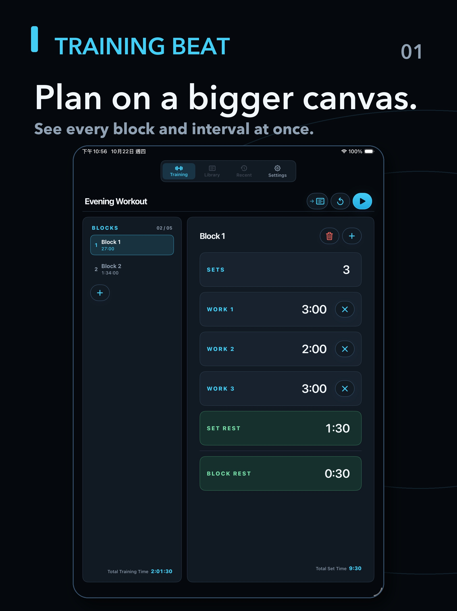
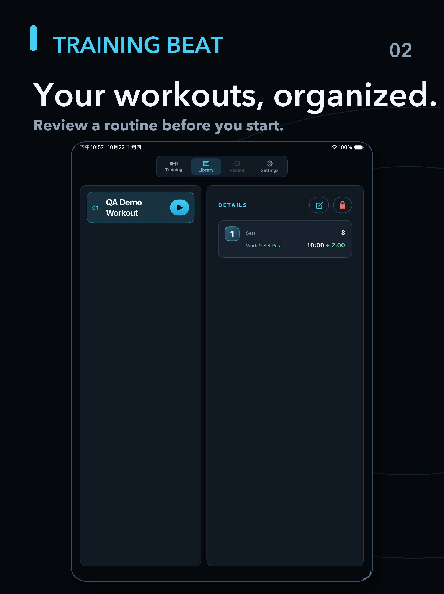
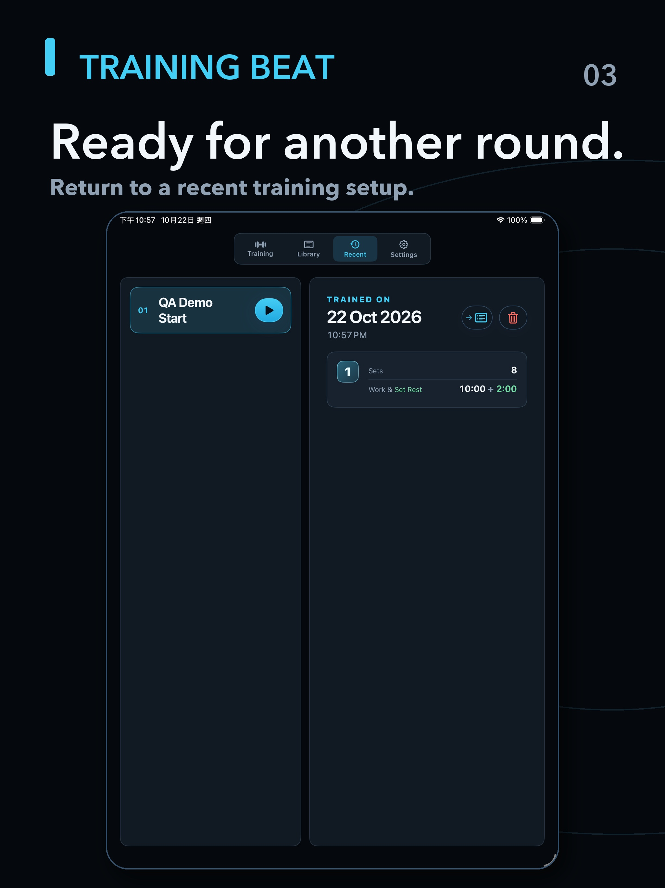

Shape each block
Set up a workout with multiple Blocks, repeated Sets and work intervals. Split work into continuous Segments when your format calls for it.
Available now · v1.0.0 · iPad-first
An iPad-first interval timer for group fitness coaches. Set up the class workout on a clear, shared screen, then keep the next work or rest interval in view while you coach. iPhone is supported too.
Get Training Beat on the App StoreIn a group session, the timer is part of the room. Training Beat helps coaches prepare a structured interval workout and makes its current phase easy to read from a distance.
It is a practical class timer—not a training plan, performance tracker or connected fitness platform.
Set up a workout with multiple Blocks, repeated Sets and work intervals. Split work into continuous Segments when your format calls for it.
A large countdown distinguishes work from rest at a glance, with straightforward controls for pausing, resuming or moving on.
Save workout templates in your Library and revisit recent session settings on the same device.
Version 1.0.0 is available for iPhone and iPad. Workout settings and recent records stay on your device.
Explore the iPad-first experience: prepare a workout, choose a saved routine, and return to recent class setups.



Arrange work, sets and the rests between them.
Keep the active phase and remaining time in view.
Let the timer carry the rhythm while you focus on the class.
Training Beat is designed to work offline and keep workout settings on your device.
AVAILABLE NOW · VERSION 1.0.0
Made for coaches running a class from iPad, with iPhone support when you need it. Build your intervals, keep the current work or rest phase in view, and return to saved workouts whenever you need them.
Download on the App Store